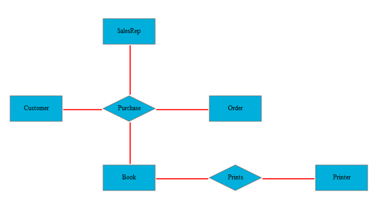

Essential Diagram for MVC allows the user to manually specify the layout of the page. The nodes can be positioned at any point on the diagram page. The OffsetX and OffsetY properties can be used to specify the position. Connections can then be made between the nodes using the various line connectors.
The nodes and connectors need to be added to the Nodes and Connections collections of DiagramModel respectively. This gives complete control over the placement of nodes on the page and enables the user to create diagrams as suited for their business needs.
The following code snippet shows how the manual layout may be specified.
|
Controller DiagramPropertiesModel model = new DiagramPropertiesModel(); public ActionResult FlatDiagram() { Node customer = AddNode("Customer", "Customer", 75, 220, Shapes.Rectangle, 100.00, 50.00, null, 1); Node salesRep = AddNode("SalesRep", "SalesRep", 250, 75, Shapes.Rectangle, 100.00, 50.00, null, 1); Node purchase = AddNode("Purchase", "Purchase", 250.00, 220.00, Shapes.FlowChart_Decision, 100.00, 50.00, null, 1); Node book = AddNode("Book", "Book", 250.00, 350.00, Shapes.Rectangle, 100.00, 50.00, null, 1); Node order = AddNode("Order", "Order", 450.00, 220.00, Shapes.Rectangle, 100.00, 50.00, null, 1); Node prints = AddNode("Prints", "Prints", 450, 350, Shapes.FlowChart_Decision, 100.00, 50.00, null, 1); Node printer = AddNode("Printer", "Printer", 650, 350, Shapes.Rectangle, 100.00, 50.00, null, 1); LineConnector line1 = AddConnector(customer, purchase,"line1"); LineConnector line2 = AddConnector(salesRep, purchase,"line2"); LineConnector line3 = AddConnector(book, purchase,"line3"); LineConnector line4 = AddConnector(order, purchase,"line4"); LineConnector line5 = AddConnector(book, prints,"line5"); LineConnector line6 = AddConnector(prints, printer,"line6"); model.Nodes = new NodesCollection() { customer, salesRep, purchase, book, order, prints, printer }; model.Connectors = new LinesCollection() { line1, line2, line3, line4, line5, line6 }; model.Width = Unit.Pixel(950); model.Height = Unit.Pixel(500); model.ClientSideOnSelectNode = "onSelectNode"; model.ClientSideOnLoad = "onLoad"; model.ClientSideOnClick = "onClick"; model.DiagramMode = DiagramMode.SVG; ViewData["FlatDiagram"] = model; return View(); } [AcceptVerbs(HttpVerbs.Post)] public ActionResult FlatDiagram(bool IsSymbolPaletteEnabled) { ViewData["IsSymbolPaletteEnabled"] = IsSymbolPaletteEnabled; return PartialView("FlatDiagramPartialView", this.ViewData); } public Node AddNode(string name, string label, double offsetX, double offsetY, Shapes shape, double width, double height, string bgColor, double bWidth) { Node node = new Node() { Name = name, Label = label, LabelHorizontalAlignment = Horizontal.Center, LabelVerticalAlignment = Vertical.Middle, OffsetX = offsetX, OffsetY = offsetY, Shape = shape, Height = height, Width = width, BackgroundColor = "#00afdb", BorderColor = "#7a7772", BorderWidth = bWidth, LabelFontColor = "black", LabelFontSize = 12, LabelFontFamily = "Times New Roman" }; return node; } public LineConnector AddConnector(Node headNode, Node TailNode, string name) { LineConnector lineConnector = new LineConnector() { Name=name, HeadNode = headNode, TailNode = tailNode, HeadDecoratorShape = DecoratorShape.Arrow, TailDecoratorShape = DecoratorShape.Arrow, ConnectorType = ConnectorType.Bezier, LineColor = "red", LineWidth = 2 }; return lineConnector; } |
Note: If you want to create the diagram in the Canvas mode, change the DiagramMode to Canvas. By default the diagram is rendered in the SVG mode.

Figure 117: Manual Layout